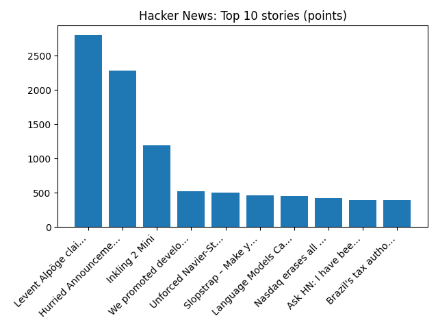

YOUR DAILY INTELLIGENCE BRIEF · 2026-11-21
The world, in focus.
No recent news coverage available.
284Global headlines
55Local headlines
24/24Sources reporting normally
🌍 Global coverage
🌌 Beyond Earth

NASA PICTURE OF THE DAY
Voyager's Neptune
📜 On this day
- 2022 A magnitude 5.6 earthquake on the Indonesian island of Java kills between 335 and 602 people.
- 2021 An SUV plows through a Christmas parade in Waukesha, Wisconsin, killing six and injuring 62.
- 2019 Israeli Prime Minister Benjamin Netanyahu is indicted on charges of bribery, fraud, and breach of trust.
- 2019 Tesla launches the SUV Cybertruck. A gaffe occurs during the launch event when its "unbreakable" windows shatter during demonstration.
📈 Topic activity
AI21 headlines · -7 vs prior report
Cybersecurity5 headlines · -4 vs prior report
Technology9 headlines · -3 vs prior report
Space12 headlines · -4 vs prior report
Business16 headlines · -6 vs prior report
World165 headlines · -73 vs prior report
Northern Virginia43 headlines · -16 vs prior report
Source health: 24/24 healthy
Reuters — Headlines (Google News): ok (15)
Reuters — World (Google News): ok (15)
Reuters — Business (Google News): ok (15)
BBC — World: ok (15)
BBC — Tech: ok (15)
BBC — Business: ok (15)
BBC — Science: ok (15)
AP — Headlines (Google News): ok (15)
AP — Politics (Google News): ok (15)
AP — Business (Google News): ok (15)
NPR — Top Stories: ok (10)
NPR — Politics: ok (10)
NPR — Business: ok (10)
NPR — Science: ok (10)
NPR — Technology: ok (10)
ScienceNews: ok (15)
ScienceDaily — Top: ok (15)
Nature — Technology: ok (15)
Google News — Northern Virginia: ok (15)
Google News — Northern Virginia traffic: ok (15)
Google News — Northern Virginia weather: ok (15)
Wikipedia — On This Day: ok (10)
Wikipedia — Random: ok (1)
NASA — APOD: ok (1)
View original detailed report
Daily Knowledge Garden — 2026-11-21
🧭 Daily Summary
Global coverage includes FBI reportedly investigating apparent hack of its criminal database; Hormuz swim highlights environmental cost of war; Canada defense minister says no shift in US military ties - Reuters. Local coverage includes Housing inventory rises in major Virginia markets - Virginia Business; Remains of missing Rockville man possibly found in Northern Virginia - FOX 5 DC.
🌍 Global News (cross-source)
- FBI reportedly investigating apparent hack of its criminal database — BBC — World
- Hormuz swim highlights environmental cost of war — BBC — Science
- Canada defense minister says no shift in US military ties - Reuters — Reuters — Headlines (Google News)
- How Grand Theft Auto VI's launch surpassed expectations - Reuters — Reuters — Headlines (Google News)
- Time may be far stranger than we realize. Scientists have a way to test it — ScienceDaily — Top
🏙️ Local News
- Housing inventory rises in major Virginia markets - Virginia Business — Google News — Northern Virginia
- Remains of missing Rockville man possibly found in Northern Virginia - FOX 5 DC — Google News — Northern Virginia
- Lawsuit accuses ICE of making unlawful arrests in Northern Virginia, Hampton Roads - InsideNoVa — Google News — Northern Virginia
- Northern Virginia Turkey Trots: A Few Miles Before The Mashed Potatoes - Patch — Google News — Northern Virginia
- Primark Opens Third Northern Virginia Location at Pentagon City - Northern Virginia Magazine — Google News — Northern Virginia
🚀 Hacker News (Top 5)
- Levent Alpöge claims proof of the Generalized Riemann Hypothesis [pdf] — 2377 points, 1603 comments
- Hurried Announcement: Alessandro Masullo GRH — 1580 points, 720 comments
- Inkling 2 Mini — 689 points, 112 comments
- If you can't explain something in simple terms, you don't understand it (2017) — 627 points, 293 comments
- Restricting AI agents in mobile operating systems platforms from capturing data — 511 points, 305 comments

🌍 Wikipedia — On This Day (selected)
- 2022 — A magnitude 5.6 earthquake on the Indonesian island of Java kills between 335 and 602 people.
- 2021 — An SUV plows through a Christmas parade in Waukesha, Wisconsin, killing six and injuring 62.
- 2019 — Israeli Prime Minister Benjamin Netanyahu is indicted on charges of bribery, fraud, and breach of trust.
- 2019 — Tesla launches the SUV Cybertruck. A gaffe occurs during the launch event when its "unbreakable" windows shatter during demonstration.
- 2017 — Robert Mugabe formally resigns as President of Zimbabwe, after thirty-seven years in office.
🎲 Wikipedia — Random Article
Graded ring
A graded module that is also a graded ring is called a graded algebra. A graded ring could also be viewed as a graded ℤ-algebra.
https://en.wikipedia.org/wiki/Graded_ring
🌌 NASA APOD
Feed Health
- Reuters — Headlines (Google News): ok (15 articles)
- Reuters — World (Google News): ok (15 articles)
- Reuters — Business (Google News): ok (15 articles)
- BBC — World: ok (15 articles)
- BBC — Tech: ok (15 articles)
- BBC — Business: ok (15 articles)
- BBC — Science: ok (15 articles)
- AP — Headlines (Google News): ok (15 articles)
- AP — Politics (Google News): ok (15 articles)
- AP — Business (Google News): ok (15 articles)
- NPR — Top Stories: ok (10 articles)
- NPR — Politics: ok (10 articles)
- NPR — Business: ok (10 articles)
- NPR — Science: ok (10 articles)
- NPR — Technology: ok (10 articles)
- ScienceNews: ok (15 articles)
- ScienceDaily — Top: ok (15 articles)
- Nature — Technology: ok (15 articles)
- Google News — Northern Virginia: ok (15 articles)
- Google News — Northern Virginia traffic: ok (15 articles)
- Google News — Northern Virginia weather: ok (15 articles)
- Wikipedia — On This Day: ok (10 articles)
- Wikipedia — Random: ok (1 articles)
- NASA — APOD: ok (1 articles)
Runs so far today: 2